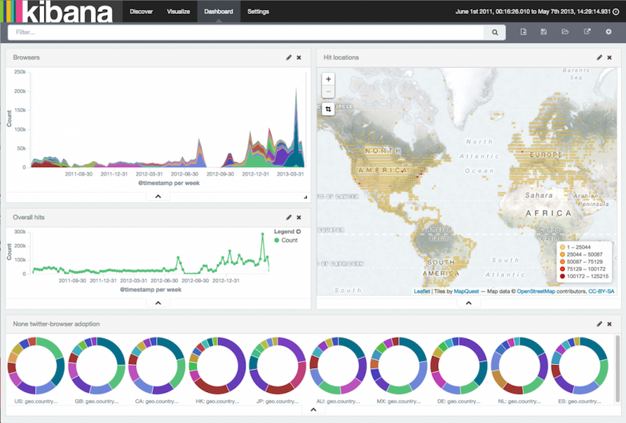

Don't waste your logs!
Using Elasticsearch, Logstash and Kibana to visualize your log data.
What we did with our logs so far
|
ssh user@host tail -f /var/log/yourlog.log |
Searching the ASCII art...
149.154.152.59 - - [12/Apr/2015:09:23:33 +0200] "GET /api/v1/timedata/tags HTTP/1.0" 200 3402 "-" "Pingdom.com_api_check"
149.154.152.59 - - [12/Apr/2015:09:28:33 +0200] "GET /api/v1/timedata/tags HTTP/1.0" 200 396 "-" "Pingdom.com_api_check"
149.154.152.59 - - [12/Apr/2015:09:33:33 +0200] "GET /api/v1/timedata/tags HTTP/1.0" 200 3402 "-" "Pingdom.com_api_check"
85.125.36.34 - - [12/Apr/2015:09:35:32 +0200] "GET / HTTP/1.1" 302 3586 "-" "Mozilla/5.0 (Windows NT 6.1; WOW64; Trident/7.0; rv:11.0) like Gecko"
85.125.36.34 - - [12/Apr/2015:09:35:32 +0200] "GET /itstime/ HTTP/1.1" 302 405 "-" "Mozilla/5.0 (Windows NT 6.1; WOW64; Trident/7.0; rv:11.0) like Gecko"
85.125.36.34 - - [12/Apr/2015:09:35:32 +0200] "GET /itstime/track;jsessionid=1DD361D36CE2B8E1BA39298A54DE21F5 HTTP/1.1" 200 21998 "-" "Mozilla/5.0 (Windows NT 6.1; WOW64; Trident/7.0; rv:11.0) like Gecko"
85.125.36.34 - - [12/Apr/2015:09:35:34 +0200] "GET /itstime/resources/com.openforce.timejim.wicket.common.DateFilterPanel/DateFilterPanelDatepickerLocale.js HTTP/1.1" 304 245 "https://time.jimssquare.com/itstime/track;jsessionid=1DD361D36CE2B8E1BA39298A54DE21F5" "Mozilla/5.0 (Windows NT 6.1; WOW64; Trident/7.0; rv:11.0) like Gecko"
85.125.36.34 - - [12/Apr/2015:09:35:34 +0200] "GET /itstime/resources/org.apache.wicket.markup.html.WicketEventReference/wicket-event.js HTTP/1.1" 304 245 "https://time.jimssquare.com/itstime/track;jsessionid=1DD361D36CE2B8E1BA39298A54DE21F5" "Mozilla/5.0 (Windows NT 6.1; WOW64; Trident/7.0; rv:11.0) like Gecko"
85.125.36.34 - - [12/Apr/2015:09:35:34 +0200] "GET /itstime/resources/org.apache.wicket.ajax.WicketAjaxReference/wicket-ajax.js HTTP/1.1" 304 245 "https://time.jimssquare.com/itstime/track;jsessionid=1DD361D36CE2B8E1BA39298A54DE21F5" "Mozilla/5.0 (Windows NT 6.1; WOW64; Trident/7.0; rv:11.0) like Gecko"
It's time to do it better
Common issues in developers world
- Logs are distributed in our cloud infrastructure
- Logs are unstructured and different for different services
- DEV normally don't want to have access to production systems
- Command line tools are powerful, but UI/UX is limited
Logstash

|
|
Logstash pipeline
| Input | Filter | Output |
|---|---|---|
|
Apache Logs Mail Server Logs Database Logs Log4J Logs files stdin tcp messaging systems redis about 40 others |
GROK Date GeoIP Anonymize csv about 50 others |
Elasticsearch Graphite Nagios redis messaging systems about 60 others |
See the Logstash docs for a complete list
Simple echo configuration
input {
stdin {}
}
output {
stdout { codec => rubydebug }
}
Start in command line with
bin/logstash -f 00-simple-echo.confLook at the output
Output is in Json format
{
"message" => "this is a super cool log message.",
"@version" => "1",
"@timestamp" => "2015-04-15T04:54:30.021Z",
"host" => "ushuaia"
}
- message: The original input
- @version: internal Logstash field
- @timestamp: The timestampt the message was received
- host: Logstash hostname
Now apply a simple filter
input {
stdin {}
}
filter {
grok {
match => [ "message", "%{WORD: firstname} %{WORD: lastname} %{NUMBER:age}"]
}
}
output {
stdout { codec => rubydebug }
}
Filtered output
{
"message" => "Gerhard Hipfinger 39",
"@version" => "1",
"@timestamp" => "2015-04-15T05:16:47.525Z",
"host" => "ushuaia",
"firstname" => "Gerhard",
"lastname" => "Hipfinger",
"age" => "39"
}
simple, isn't it?
Summary
- Logstash is a simple filtering I/O pipeline for events
- As the Unix pipe | you can use the output as input for another pipeline
- You can setup complex distributed systems
- Great for high performance and great scalability
- A distributed full text search engine based on Apache Lucene.
- Automatic sharding and data distribution.
- HTTP and JSON based.
- This makes it a perfect match as a Logstash output storage.
Kibana
DEMO
Q & A
Gerhard Hipfinger
Founder of openForceWe are here to help you with Scala and Java projects.
Strong in frontend development with JavaScript/AngularJS.
We love mobile development too.
Always looking for great developers, designers, system engineers - you got it...
Twitter: @nano4711